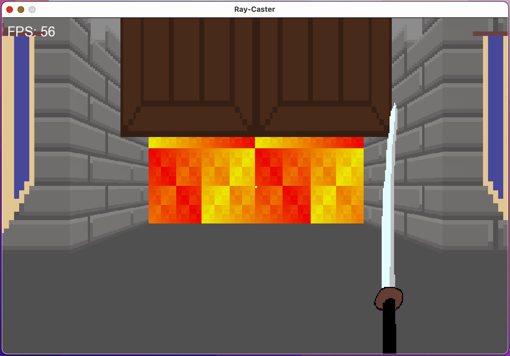

SFML C++ Raycaster
Over the summer holidays, I wanted to try my hand at a larger project, of which this is the result. It is a raycaster game engine written with C++ and SFML, featuring level editing, level saving, variable wall height, and some animations.

A screenshot of the gameplay.
triangles - balance between ray collision detection simplicity and versatility in rendering dif shapes, also it is the simplest 2d shape besides a circle, simple to render, different rendering techniques (ray casting, ray tracing, rasterisation)
opengl? tile based environment, tilemap. 2.5d
opengl, webgl.